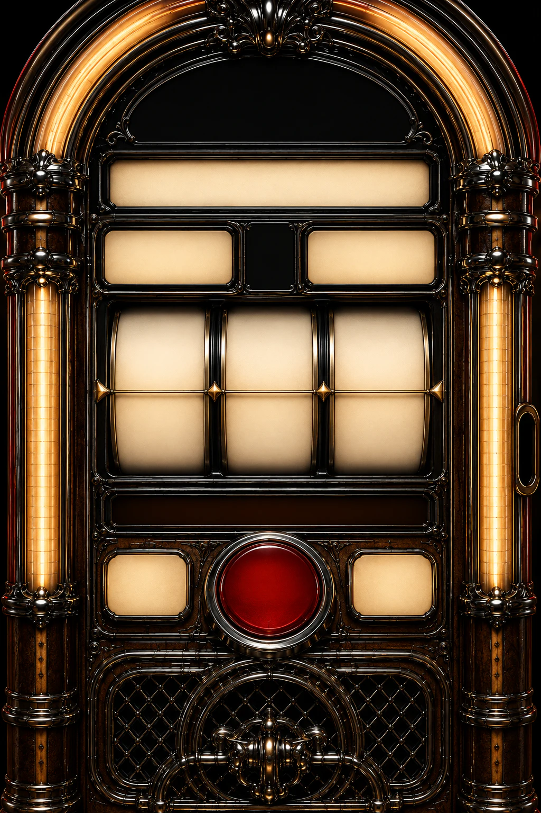

AGGITS
GOOD PEOPLE DOING NOTHING
LOADINGVIDEOSPLEASE WAIT
GOOD PEOPLE DOING NOTHING. JOSEPH ON HIS MAGNIFICENT BASS AND GUITAR. ANDY FUCKING UP THE DRUMS PRETTY MUCH CONTINUOUSLY, AND JOE BEING JOE, WHATEVER THAT IS. IT'S A FUNNY OLD WORLD, PRACTICING IN FITZROY, FITZROY NORTH, IN FACT, ALL THOSE YEARS AGO. OVER TIME, RECORDED STUFF, DID A FEW GIGS. OUR FIRST GIG WAS AT THE PRAGUE IN THORNBURY. THAT WAS A SURPRISE GIG. IT WAS GOOD FUN. ANYWAY, SOMEHOW WE'VE STAYED FRIENDS ALL THIS TIME. I DON'T KNOW HOW, BUT WE CONTINUE TO STAY IN TOUCH AND HAVE FUN. JOSEPH'S HAIR, LONGER THAN IT'S EVER BEEN. HE WEARS A HAT, WHICH IS COOL. I LIKE HIS HAT. HE'S A GOOD GUY. I LIKE HIM. JOE, INCREDIBLY PEDESTRIAN, BUT A LOVELY GUY.
Pull the lever or press Re-Spin. The single reel stops on one of three videos. Press Play Video to open the official YouTube player, then press YouTube Play.
Loading the Video Music Machine.